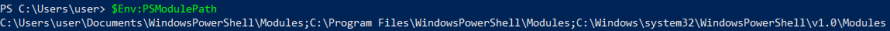

Import-Module
With "Import-Module" cmdlet we can import a module into our current PowerShell session
PS> Import-Module .\module.psm1
Once we import a PowerShell module, all of its various cmdlets and other components become available to us, and we can simply then execute the cmdlets that are part of the module.
The modules need to be copied in one of the modules paths specified by the
$Env:PSModulePath powershell environment variable
 ◇ C:\Users\$env:username\Documents\WindowsPowerShell\Modules <--- use this
◇ C:\Program Files\WindowsPowerShell\Modules
◇ C:\Windows\system32\WindowsPowerShell\v1.0\Modules
IMPORTANT: the folder that we will drop in one of these folder need to have the same name of module file (.psm1)
example with PowersploitPS> (new-object System.Net.WebClient).DownloadFile("https://github.com/PowerShellMafia/PowerSploit/archive/refs/heads/master.zip", "$env:userprofile\desktop\master.zip");$ZippedFilePath = "$env:userprofile\desktop\master.zip";$DestinationFolder = "$env:userprofile\Documents\WindowsPowerShell\Modules"; [void] (New-Item -Path $DestinationFolder -ItemType Directory -Force);$Shell = new-object -com Shell.Application;$Shell.Namespace($DestinationFolder).copyhere($Shell.NameSpace($ZippedFilePath).Items(),4);Rename-Item "$env:userprofile\Documents\WindowsPowerShell\Modules\PowerSploit-master" "$env:userprofile\Documents\WindowsPowerShell\Modules\PowerSploit"now we should see the modules of Powersploit that we can import
PS> Get-Module -ListAvailable #list modules that we can import
PS> Import-Module PowerSploit #import module
PS> Get-Module #imported modules
List all the cmdlets(commands) that we have imported with the PowerSploit module
PS> Get-Command -Module PowerSploit #list commands that we hhave imported with Powersploit
For help on a specific PowerSploit cmdlet
PS> Get-Help Write-HihackDLL